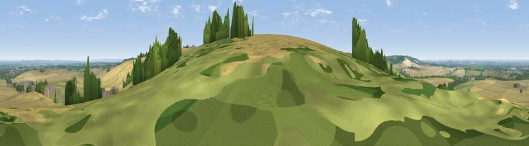

Viewpoint near Letcombe Regis
#10561 in England · top 10% of its area beats it · near Letcombe RegisWhere it is
The exact computed spot (SU 39384 85013). Click the marker for map links.
The view, rendered

A 360° render of this exact spot computed from the terrain model, tree cover and land cover — summer colours, afternoon light, calibrated against photographs of famous viewpoints. Real trees, hedges and buildings will differ in detail.
The panorama
Grey silhouette: terrain skyline in each direction (720 bearings, Earth curvature and refraction included). Dashed green: skyline with trees (+15 m) and buildings (+8 m) as obstacles. Blue strip: how far the ground is visible on each bearing.
Where the view opens
Wedge length = distance to the farthest visible ground on that bearing (vegetation-aware). Rings at 10, 25 and 50 km.
What fills the view
60% cropland · 27% grassland · 11% woodland · 2% built-up
Angular shares of the visible panorama (visual magnitude), not map area. Landscape diversity 0.43 (0–1 Shannon).
Key numbers
More beautiful places nearby
The staircase of upgrades: each row has a higher view potential than everything closer. Driving times are estimates from straight-line distance, calibrated against real road routing — check an actual route before setting out.
| Place | Direction | Drive | Score |
|---|---|---|---|
| Seven Acre Hill | W · 5 km | ~12 min | 66.6 |
| Viewpoint near Kingston Lisle | W · 8 km | ~16 min | 68.5 |
| Viewpoint near Woolstone | W · 9 km | ~18 min | 70.9 |
| Viewpoint near Woolstone | W · 10 km | ~19 min | 76.7 |
| Martinsell viewpoint | SW · 30 km | ~47 min | 76.9 |
| Viewpoint near Leckhampton | NW · 56 km | ~77 min | 77.8 |
| Viewpoint near Cleeve Hill | NW · 58 km | ~80 min | 79.6 |
| Cleeve Hill | NW · 58 km | ~80 min | 79.8 |
51.56263, -1.43324 · source: osm viewpoint · position refined by local search. Computed location — check access rights before visiting.